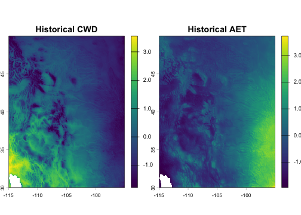
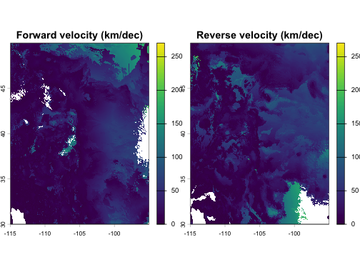
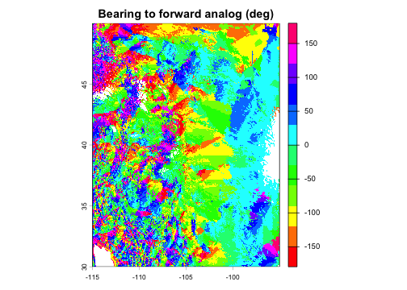
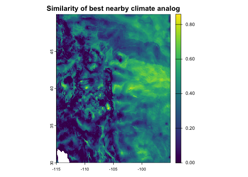
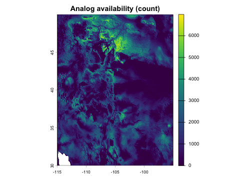
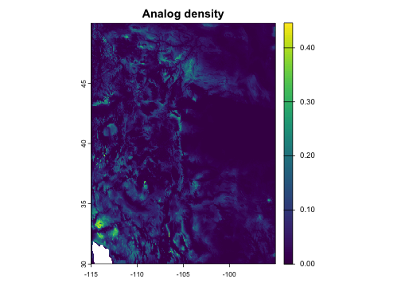
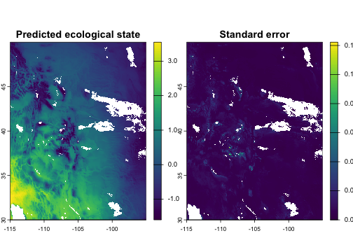
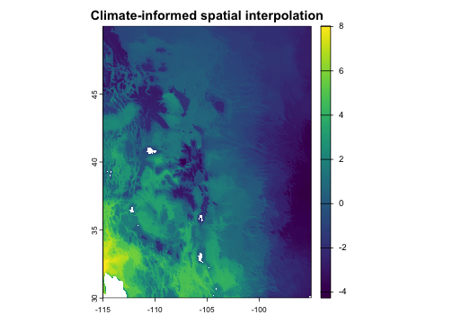
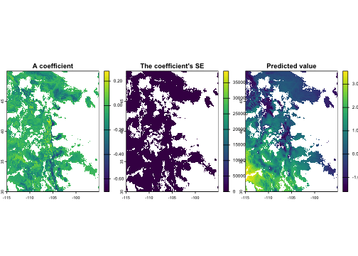
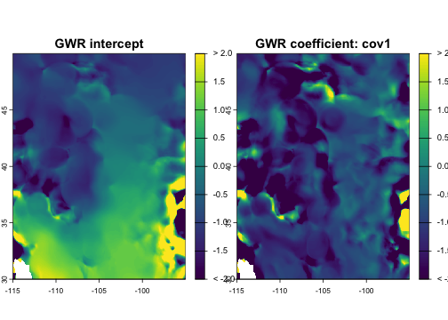

library(analogs)
library(terra)
#> terra 1.9.27
#>
#> Attaching package: 'terra'
#> The following objects are masked from 'package:testthat':
#>
#> compare, describeOverview
The analogs package implements a general framework for distance-based neighborhood models. Every analysis follows a two-stage pattern:
- First, select a neighborhood of analog locations from a reference pool, based on environmental similarity, geographic proximity, or both.
- Optionally, summarize the neighborhood using counts, weighted means, regression coefficients, or other statistics.
Common methods in climate change ecology—climate velocity, analog
impact models, analog availability—are all specific configurations of
this framework. So are geographically weighted regression (GWR) and
inverse distance-weighted (IDW) interpolation, which use purely
geographic neighborhoods. The package implements these via a flexible
core function, analog_search(), along with simplified
wrappers for common analysis types.
The table below shows how each wrapper maps to the framework:
| Function | Neighborhood | Summary | Use case |
|---|---|---|---|
analog_velocity() |
k nearest geographic, environment-constrained | Pairs | Where is this climate moving? |
analog_similarity() |
k nearest environmental, geographically-constrained | Pairs | What climates are reachable? |
analog_availability() |
All within thresholds | Count | Where do analogs exist? |
analog_density() |
All within thresholds | Weighted sum | How strong are analog matches? |
analog_impact() |
All within thresholds | Weighted mean | What ecological conditions to expect? |
analog_regression() |
Flexible | Local regression | How do covariates predict outcomes within neighborhoods? |
As described below, these functions fall into two categories: analog
enumeration functions (which find analogs for each focal site and either
return them directly or summarize their abundance or quality), and
analog-based prediction functions (which fit local models predicting an
outcome variable y observed across each focal site’s
analogs). Note that while this document covers the key wrapper
functions, you can also implement a broader range of analyses by calling
analog_search() directly.
Data
All functions in the package require two data inputs: x
(the set of focal locations for which analogs are to be found) and
pool (the set of reference locations to search for
analogs). Both these components need to have spatial coordinates and
environmental data (most commonly climate, though other variables can
also be used) for each location. Prediction functions also require
y (outcome variable(s)). Data can be provided as matrices,
data.frames, or SpatRasters. x and pool must
have the same set of environmental variables, but can be in different
formats and can represent different sets of sites.
Most of the examples in this vignette are focused on climate change,
and assume that x and pool come from different
time periods with different climates. In these situations, you typically
have a choice about which dataset to map to which of the two parameters,
and swapping them can give different insights. For example, as shown in
the climate velocity section below, swapping the parameter mapping
switches the analysis from forward to reverse velocity; while it’s only
shown for velocity, this is also possible for the other climate change
analyses. For non-climate-change applications like GWR and IDW, shown
toward the end of this vignette, x and pool
can be from the same time period.
The package includes an example dataset of climate rasters covering a portion of western North America at approximately 5 km resolution, with two scaled climate variables (climatic water deficit and actual evapotranspiration) for a historical baseline (1981–2010) and a future projection (2041–2070, SSP585). These are used throughout this vignette. Let’s unpack them and make some quick maps:
clim <- example_rasters()
hist <- clim$historic
fut <- clim$future
plot(hist, main = c("Historical CWD", "Historical AET"))
Defining analogs
Most of this document focuses on different types of analog queries.
But regardless of query type, you also have to define what qualifies as
an “analog.” Broadly speaking, an analog is any location in
pool that is environmentally similar and/or geographically
close to a given focal location in x.
Analog kernels
Your specify an analog definition using the kernel()
helper function, which returns an <analog_kernel>
object that can be passed to the env and geog
arguments of various analog functions. Analog kernels operate on
pairwise environmental and geographic distances between x
and pool, which get used in two ways. Distances are used as
hard thresholds to select a set of analogs, and they’re often also used
as weights to place higher value on nearby/similar analogs that may be
more ecologically or statistically relevant. Distance units and measures
for geographic and environmental distances are thus centrally important,
and are discussed below.
If you define both environmental and geographic kernels, they get intersected to define analogs.
Distance thresholds are set with the max parameter to
kernel(). For example,
analog_search(..., env = kernel(max = 0.25), geog = kernel(max = 100))
finds analogs within 0.25 environmental units and 100 geographic units
of a given x. Note that large max values can
substantially increase computation time.
Kernel weights are specified via the weight (kernel
shape) and theta (kernel bandwidth) parameters. These
control how analog weights decay with distance, which is relevant for
some stat options. Available kernel shapes include:
-
"uniform"— all analogs weighted equally (also the default whenweightis unspecified) -
"gaussian"— Gaussian kernel with theta as standard deviation: -
"inverse"— inverse distance weighting, with theta as bandwidth:
When using a kernel that weights environmental and/or geographic
distances, the combination of parameters should be set so that kernel
weight decays to near zero at the max boundary. This allows
the kernel function to drive the results while the max cutoffs function
mainly to reduce run time by minimizing unneeded computation.
The helper function kernel_params() is useful for
determining what values to choose for theta and
max. It gives theoretical answers to the questions, “How
big should theta be in order for my kernel to capture a
given fraction of pool sites for the typical focal site?” and “How big
should max be so that it truncates only a given percentage
of kernel weight for the typical focal site?” These questions are
subject to the curse of dimensionality and depend on the number of
environmental variables, so intuition does not always hold.
kernel_params() gives theoretical answers, assuming that
pool follows a multivariate normal distribution (as
approximately achieved by mahalanobis_transform()) or a
uniform distribution, and that the focal site is randomly sampled from
pool.
For example, if you had d = 4 environmental variables
and wanted to size your Gaussian environmental kernel so that it
captures 10% of the pool for the average site during the
baseline era (and assuming you had run
mahanobis_transform() so that your data were approximately
multivariate normal), here’s how you get kernel parameter
recommendations:
kernel_params(fraction = 0.10, d = 4, loss = 0.01,
kernel = "gaussian", data_dist = "mvn")
#> $theta
#> [1] 0.6800554
#>
#> $max
#> [1] 2.049015Geographic distance
The package automatically detects whether coordinates are
longitude/latitude or projected, and uses great-circle or planar
distance accordingly. You can override this with
coord_type = "lonlat" or
coord_type = "projected". Geographic thresholds are in
kilometers for lon/lat data and in projection units for projected
data.
Environmental distance
By default, environmental distance is Euclidean. When using multiple environmental variables, it is recommended to scale them first to avoid artifacts from differing units. The example data used here is already scaled.
For dataset-wide Mahalanobis distance (accounting for covariance
among environmental variables), use mahalanobis_transform()
to pre-whiten the data:
transformed <- mahalanobis_transform(x = hist, pool = fut)
vel_mahal <- analog_velocity(
x = transformed$x,
pool = transformed$pool,
env = kernel(max = 0.25),
k = 1
)For site-specific covariance (e.g., based on local year-to-year
climate variability), supply pre-computed covariance matrices via the
x_cov parameter.
Analog weights
Beyond the kernel weights described above, the framework supports two other ways to weight pool sites in summary statistics. Both get multiplied through any kernel weighting and influence which analogs receive more weight in the aggregation, but do not affect which analogs are selected.
-
Cell-area weights correct for the fact that raster
grid cells often have non-uniform area. Without correction, naive
summaries over multiple analog grid cells are biased toward regions of
small cells (e.g. high latitudes on a lon-lat grid, or distorted regions
of a non-equal-area projection). When
poolis a raster, analog functions compute and apply cell-area weights by default. You can override this withcell_area_weight = FALSEto disable it. -
User weights let you express ecological or
methodological variation across pool sites — for example, sampling
effort, ecological intactness, occurrence probabilities for a focal
species, or any other per-site weight that should influence aggregation.
Pass them via the
weightargument as a numeric vector, single-column matrix or data frame, or single-layer SpatRaster matchingpool. Values must be non-negative;NAis allowed and is treated as zero (the site contributes nothing). User weights are reported alongside the analog index in pair-mode output, making it easy to filter or post-process based on the weight of each match. - Also note that a fourth source of weighting, sample
weights, arises only when you set
downsample < 1to accelerate queries on a large pool (as discussed below). The package rescales the surviving points’ weights to keep aggregations unbiased, and these weights get multiplied with the other three. You generally do not need to think about them; they are surfaced as asample_weightcolumn in pair-mode output for the rare case where you want to inspect them.
Analog enumeration functions
This category of analyses includes functions that simply identify and
return analogs (e.g. analog_velocity()) and functions that
instead return a summary of the count or weights of analogs. Let’s look
at them each in turn.
Climate velocity
Analog-based climate velocity metrics are widely used to assess dispersal constraints under climate change. Forward or outbound velocity, the distance from a site to the nearest location with a projected future climate similar to the site’s historical/current climate, represents the migration required for current residents to track baseline climate conditions. Reverse or inbound velocity, the distance from a site to the nearest location with a historical climate similar to the site’s projected future climate, represents constraints on the arrival of new residents adapted to the site’s future conditions.
These metrics are implemented as a geographic nearest-neighbor search
under a hard climate constraint, with reverse velocity implemented by
swapping the climate data for the two eras. For each focal site, the
result returns data on its single nearest geographic analog (subject to
the climate similarity threshold max). The geographic
distance to that analog, divided by the time elapsed, is the velocity.
Sites with no analog in the reference pool—an important category— have
NA results.
fwd_vel <- analog_velocity(
x = hist,
pool = fut,
env = kernel(max = 0.25),
k = 1
)
rev_vel <- analog_velocity(
x = fut,
pool = hist,
env = kernel(max = 0.25),
k = 1
)
decades <- 6
vel <- c(fwd_vel$geog_dist, rev_vel$geog_dist) / decades
plot(vel, range = range(minmax(vel)),
main = c("Forward velocity (km/dec)", "Reverse velocity (km/dec)"))
In addition to geographic and environmental distances, the result
also includes the spatial coordinates of each site’s nearest analog (as
well as the analog’s index in the pool). This can be used
for a variety of downstream analyses, including visualizing the
direction from a site to its analog location:
fwd_vel$bearing <- geosphere::bearing(crds(fwd_vel, na.rm = FALSE),
values(fwd_vel)[, c("analog_x", "analog_y")])
plot(fwd_vel$bearing, main = c("Bearing to forward analog (deg)"),
col = rainbow(12))
Environmental similarity
Environmental similarity answers the inverse question from climate velocity: for each location’s environment, what is the most similar environment within a given geographic radius? This finds the most climatically similar locations that are geographically reachable, which can provide insight into how much climate change organisms must tolerate given limited dispersal capacity.
sim <- analog_similarity(
x = fut,
pool = hist,
geog = kernel(max = 100),
k = 1
)
plot(sim$env_dist, main = "Similarity of best nearby climate analog")
Analog availability
How many analogs exist within specified environmental and geographic thresholds? This maps the density of suitable analogs across the landscape. Locations with large numbers of nearby analogs have greater potential for adaptive dispersal under climate change, while locations with zero analogs represent novel or disappearing climates.
avail <- analog_availability(
x = fut,
pool = hist,
env = kernel(max = 0.5),
geog = kernel(max = 200),
)
plot(avail, main = "Analog availability (count)")
Analog density
Similar to availability, but weighted by environmental kernel-based
similarity and/or geographic proximity rather than simply counted. This
captures both the quantity and quality (proximity/suitability) of analog
matches. By default, raw density is normalized by dividing it by its
theoretical maximum value (calculated from kernel,
max_geog, and theta) to make it
interpretable.
intens <- analog_density(
x = fut,
pool = hist,
env = kernel(max = 0.6, weight = "gaussian", theta = 0.2),
geog = kernel(max = 0.25, weight = "gaussian", theta = 50)
)
plot(intens, main = "Analog density")
Prediction functions
Compared to the functions covered above that simply enumerate
analogs, analog-based prediction functions find analogs and then fit a
model that summarizes additional properties (outcome variables
y) of those analogs. Model options include weighted means
and categorical counts (via analog_impact()) and ordinary
and ridge regression on additional covariates (via
analog_regression()).
Options for assessing uncertainty include returning standard errors
on fitted means and coefficients (via the se parameter) and
running various forms of cross-validation within pool (via
analog_cv()).
Analog impact models
Analog impact models (AIMs) predict ecological outcomes
(y) under climate change. For each focal site, this
approach finds locations within geographic range that have current
climates similar to the focal site’s future climate, then computes an
average (or class count for categorical y) of their
ecological characteristics, weighted by climatic similarity. As an
example, let’s use CWD values from the historical period as a stand-in
for an ecological response variable. To assess uncertainty in weighted
means, let’s also specify se = "ess" to compute standard
errors based on effective sample size for each grid cell.
# Use historical CWD as a proxy ecological variable
eco_var <- hist$CWD
impact <- analog_impact(
x = fut,
pool = hist,
y = eco_var,
env = kernel(max = 0.5, weight = "gaussian", theta = 0.15),
geog = kernel(max = 200),
se = "ess"
)
plot(impact[[c("weighted_mean", "se_weighted_mean")]],
main = c("Predicted ecological state", "Standard error"))
The kernel and theta parameters control how
analog influence decays with environmental distance. A Gaussian kernel
with theta = 0.15 means analogs at an environmental
dissimilarity distance of 0.15 receive about 60% weight, while those at
0.45 (= 3 × theta) receive almost none. The hard threshold
max provides an absolute cutoff.
Spatial interpolation
The analog framework is also useful for analyses outside climate
change scenarios. When x and pool share the
same climate era, analog_impact() performs environmentally-
and/or geographically-informed interpolation: for each grid cell, it
finds sample locations with similar environment or nearby locations,
then computes a weighted average of their measured values. This is
useful for mapping ecological variables from sparse field observations
onto a continuous grid. Unlike purely geographic interpolation methods
(inverse distance weighting, kriging), this approach can also weight
observations by environmental similarity, so a distant site with
matching environment can contribute more than a nearby site with
different environment.
The example below shows an interpolation informed by both climatic
similarity and geographic proximity, with their relative importance
determined by the theta parameters and the shape of the
selected kernel function.
# Simulate sparse field observations at 500 random locations
set.seed(123)
n_sites <- 500
cells <- sample(which(!is.na(values(hist[[1]]))), n_sites)
sites <- as.data.frame(hist, xy = TRUE, na.rm = FALSE)[cells, ]
sites$observed <- 2 * sites$CWD - 0.5 * sites$AET + rnorm(n_sites, sd = 0.3)
# Interpolate onto the full grid
interp <- analog_impact(
x = hist,
pool = as.matrix(sites[, c("x", "y", "CWD", "AET")]),
y = sites$observed,
env = kernel(max = 1, weight = "gaussian", theta = 0.15),
geog = kernel(max = 200, weight = "gaussian", theta = 100)
)
plot(interp[["weighted_mean"]], main = "Climate-informed spatial interpolation")
Local regression
analog_regression() fits a weighted linear regression
model within each analog neighborhood. This is useful if your outcome
variable y has important relationships with additional
predictors beyond the variables (env and geog) used to define the analog
search kernel. In the example below we’ll use AET and its square as
covariates. The function returns and returns the coefficients (and
optionally, their standard errors) for each location in x,
and also returns predicted values if x_covariates is
provided.
The lambda parameter controls the amount of ridge
regularization. The default (lambda = 0) is ordinary
weighted least squares regression, with no regularization. Setting
lambda > 0 adds regularization, which shrinks
high-variance coefficients toward zero; this is useful for stabilizing
predictions when some neighborhoods have few analogs relative to the
number of covariates, or when covariates are strongly correlated. As
lambda -> Inf, the intercept term approaches the
weighted mean, i.e. the behavior of analog_impact(). The
typical approach for choosing a lambda value is
cross-validation (see the section on analog_cv() below),
but here we’ll arbitrarily pick a modest value.
# Simulate covariates for the pool (just using AET for expediency)
set.seed(42)
pool_covariates <- data.frame(
aet = as.vector(values(hist$AET)),
aet2 = as.vector(values(hist$AET))^2
)
# Do the same for x (not required but enables predicted values)
x_covariates <- data.frame(
aet = as.vector(values(fut$AET)),
aet2 = as.vector(values(fut$AET))^2
)
# Fit analog regression model
fit <- analog_regression(
x = fut,
pool = hist,
y = eco_var,
covariates = pool_covariates,
x_covariates = x_covariates,
env = kernel(max = 0.25, weight = "gaussian", theta = 0.15),
geog = kernel(max = 200),
lambda = 1,
se = "ess" # request standard errors
)
# Plot a few of the output variables
plot(fit[[c("coef_aet", "se_aet", "pred")]],
main = c("A coefficient", "The coefficient's SE", "Predicted value"),
nr = 1)
Geographically weighted regression
The same regression machinery supports geographically weighted regression (GWR) by using geographic neighborhoods and geographic distance kernel weighting. This is a different configuration of the same underlying framework — no environmental constraint, geographic kernel, local regression on covariates.
# GWR: geographic neighborhood, geographic kernel weighting
gwr <- analog_regression(
x = hist,
pool = hist,
y = eco_var,
covariates = pool_covariates,
select = "all",
geog = kernel(max = 100, weight = "inverse", theta = 30),
lambda = 0
)
plot(gwr[[c("coef_intercept", "coef_aet")]],
main = c("GWR intercept", "GWR coefficient: cov1"),
range = c(-2, 2), fill_range = TRUE)
Cross-validation
Cross-validation (CV) is a technique that involves comparing observed
data (y values for a given focal site) to predicted
versions of those same values made using a model that was fit on a
subset of the data that excludes the focal site. CV is useful for
estimating prediction error on historical data (to understand
uncertainty) and for calibrating model parameters (to improve predictive
accuracy).
analog_cv() provides CV workflows for
analog_impact() and analog_regression(). It
runs an analog analysis in cross-validation mode and returns held-out
predictions alongside observed values and residuals. You can plot and
analyze CV results directly, or pass them to
cv_performance() to calculate a basic set of overall
performance metrics (e.g., R-squared for continuous outcomes, AUC for
binary outcomes, etc.).
The CV routine supports leave-one-out (LOO), buffered LOO, and k-fold
cross-validation methods. In contrast to traditional statistical models,
LOO actually runs faster than k-fold for analog models because separate
models are already being fit for each focal. Standard LOO
(cv_method = "loo") is the default method, and excludes
each focal site’s own data point from model fitting. Buffered LOO
(cv_method = "loo", geog = kernel(min = ...)) excludes each
focal site and all sites within a specified geographic distance, which
can help mitigate over-optimistic performance measures resulting from
spatial autocorrelation. K-fold cross-validation splits the data into a
set of partitions, either randomly or based on groups you define, and
excludes all points in each focal’s own partition during fitting.
Importantly, cross-validation is internal to
pool—it does not take an x argument and
can’t quantify how well the model predicts values in an independent
dataset of focal sites. Thus it should not be assumed that CV
performance metrics necessarily represent model transferability to data
from different regimes (such as an x dataset representing
future climates).
As an example, let’s run LOO cross-validation for an analog impact
model, plot a map of the residuals, and quantify the model’s
performance. If we wanted to tune a model parameter (labmda
max_geog, theta, etc.), we could call
cv_performance(analog_cv(...)) repeatedly with different
parameter values to identify the best-performing settings.
# Run cross-validation and plot residuals
cv <- analog_cv(
fun = analog_impact, pool = hist, y = eco_var,
env = kernel(max = .5, weight = "gaussian", theta = 0.15),
geog = kernel(max = 200, weight = "gaussian", theta = 60),
se = "ess", cv_method = "loo"
)
#> Error:
#> ! `y` must have exactly 228823 rows/cells to match pool.
plot(cv$residual, main = "Cross-validation residual")
#> Error in `h()`:
#> ! error in evaluating the argument 'x' in selecting a method for function 'plot': object 'cv' not found
# Calculate prediction error metrics
cv_performance(cv)
#> Error:
#> ! object 'cv' not foundComputational performance
The package is designed for large-scale analyses involving millions of pairwise comparisons.
Pre-built indices
When running multiple queries against the same reference pool, build the lattice index once and reuse it:
idx <- build_analog_index(hist)
# Multiple queries reuse the same index
avail_tight <- analog_availability(fut, idx, env = kernel(0.3), geog = kernel(100))
#> Error:
#> ! `weight` must be one of "uniform", "gaussian", "inverse", or NULL.
avail_loose <- analog_availability(fut, idx, env = kernel(0.8), geog = kernel(300))
#> Error:
#> ! `weight` must be one of "uniform", "gaussian", "inverse", or NULL.Index tuning
By default, the lattice resolution is auto-tuned for each query. For repeated queries with the same configuration, you can tune once and reuse:
res <- tune_index_res(
x = fut, pool = hist,
stat = "count",
env = kernel(0.5), geog = kernel(200),
verbose = TRUE
)
idx <- build_analog_index(hist, index_res = res)Parallel processing
Use the n_threads parameter to parallelize across focal
locations:
result <- analog_velocity(fut, hist, env = kernel(0.5), k = 1, n_threads = 4)Large raster datasets
For rasters too large to fit in memory,
tiled_analog_search() processes the focal data in spatial
tiles:
result <- tiled_analog_search(
x = very_large_raster,
pool = idx,
stat = "count",
env = kernel(0.5),
geog = kernel(200),
n_tiles = 16
)Downsampling
For very large reference pools, downsampling reduces computation. The
package uses an adaptive sampling routine that reduces the effects on
precision by downsampling more heavily in dense regions of
environmental-geographic space in order to preserve coverage in sparse
regions. As noted above, each pool site in the downsampled
data gets a sample weight that’s used to correct summary statistics so
that downsampling doesn’t bias the results:
result <- analog_availability(
x = fut,
pool = hist,
env = kernel(0.5),
geog = kernel(200),
downsample = 0.1
)